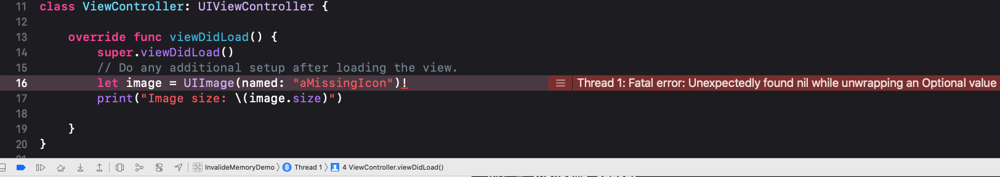
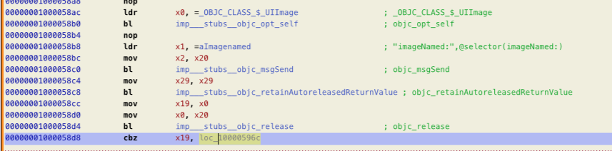

When unforced unwrapping optional in Swift, we will see the exception type in crash report is Exception Type: EXC_BREAKPOINT (SIGTRAP) instead of EXC_BAD_ACCESS in Objective-C. That intrigued me. So I did some investigations on it.
As Mike Ash mentioned in the article about swift memory layout
Swift optionals are represented just like Objective-C: a plain address when pointing to an object, and all zeroes for nil.
He gave an example like this, there are 4 variables
1 | let obj: NSObject? = NSObject() |
Basically, they lay out in memory like this:1
2
3
4806040c1957f0000
0000000000000000
70e440c1957f0000
0000000000000000
Optional variable either contains a valid object address or all zero, so-call nil in Swift, which is different from nil in OC. While, 0000000000000000 in address space actually is an illegal region to access, iOS system raises an exception if you trying to do so.
PAGEZERO in Mach-O Executable
__PAGEZERO: On 32-bit systems, this is a single page (4 KB) of memory, with all of its access permissions revoked. On 64-bit systems, this corresponds to the entire 32-bit address space — i.e. the first 4 GB. This is useful for trapping NULL pointer references (as NULL is really “0”), or integer-as-pointer references (as all values up to 4,095 in 32-bit, or 4 GB in 64-bit, fall within this page). Because access permissions — read, write, and execute — are all revoked, any attempt to dereference memory addresses that lie within this page will trigger a hardware page fault from the MMU, which in turn leads to a trap, which the kernel can trap. The kernel will convert the trap to a C++ exception or a POSIX signal for a bus error (SIGBUS). —- Mac OS and iOS internals
When the executable is loaded into memory, the first 4G memory region for this process is non-executable, non-writable, non-readable. Trying to access to this region of memory is illegal.
Example
I wrote a demo to access underlying value of an optional by adding an exclamation point (!) to the end of the optional’s name.
1 | class ViewController: UIViewController { |
Analyse Crash Report
Exception Type
1 | Exception Type: EXC_BREAKPOINT (SIGTRAP) |
EXC_BREAKPOINT (SIGTRAP)
EXC_BREAKPOINT (SIGTRAP) is a trace trap interrupted the process. It gives an attached debugger, if any, a chance to interrupt the process at a specific point in its execution. So when iOS system raises this exception since my process is trying to access 0x00000000, Xcode debugger can pause the process and show me this fatal error.

On ARM processors, this appears as
EXC_BREAKPOINT (SIGTRAP).Onx86_64processors, this appears asEXC_BAD_INSTRUCTION (SIGILL).
The Swift runtime uses trace traps for specific types of unrecoverable errors—see Addressing Crashes from Swift Runtime Errors for information on those errors.
Backtrace in Crashed Thread
1 | Thread 0 Crashed: |
Disassembling executable in Hopper
Go to file offset 22892
BRK is Breakpoint instruction to cause a Software Breakpoint Instruction exception.
Assembly code

Compiler already did optimizations for us. It will use cbz command to compare value in register x19 with zero. If it is zero, then go to label loc_10000596c, which causes a Software Breakpoint Instruction exception.
From Thread State in in the crash report, we got x19: 0x0000000000000000. So here it goes to loc_10000596c to raise EXC_BREAKPOINT exception. That is what we see in the crash report.
seems, nothing fancy. To be continue …
- https://www.mikeash.com/pyblog/friday-qa-2014-08-01-exploring-swift-memory-layout-part-ii.html
- https://www.objc.io/issues/6-build-tools/mach-o-executables/#sections
- https://developer.apple.com/documentation/xcode/diagnosing_issues_using_crash_reports_and_device_logs/understanding_the_exception_types_in_a_crash_report#3582420
- https://developer.apple.com/documentation/xcode/diagnosing_issues_using_crash_reports_and_device_logs/identifying_the_cause_of_common_crashes/addressing_crashes_from_swift_runtime_errors
- https://docs.swift.org/swift-book/LanguageGuide/TheBasics.html#//apple_ref/doc/uid/TP40014097-CH5-ID330
scan qr code and share this article